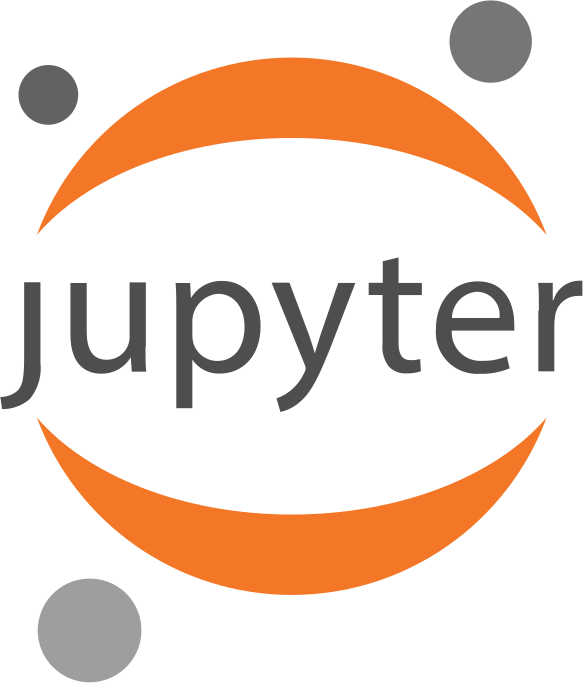

flowchart LR
subgraph Frontend
L[Lex] --> P[Parse] --> S[Sema]
end
subgraph Backend
CG[CodeGen] --> IR[LLVM IR] --> MC[MC / ORC JIT]
end
SRC[C / C++ / CUDA] --> L
S -- AST --> CG
By using the Compiler as a Service
FPLaunchpad, IIT Madras
05 September 2026
Slides: vipulcariappa.xyz/presentations/
Why do you want to interoperate with C/C++?
Speed: Scripting languages are slow. C/C++ is where the actual compute happens.
Rapid iteration: Mixing in a scripting language gives fast prototyping. Try an idea in Python, without a compile step, then drop into C++ only where it matters.
Reuse: Decades of existing C/C++ libraries. Nobody wants to rewrite BLAS, or ROOT, or Thrust, to use it from another language.
Every language wants to call C++. Almost nobody enjoys making it happen.
How many bindings does this need?
Unbounded. Matrix<float>, Matrix<double>, Matrix<std::complex<T>>, Matrix<MyType> — the set is open, and it depends on code the binding author has never seen.
A template is not a type. It is a function from types to types, and the only thing in the world that can evaluate it is a C++ compiler.
clang::Interpreter. Ask it questions at runtime: what is this type? what are its methods? instantiate this template for me. give me the address of that function.The binding layer stops being generated code. It becomes a query.
Clang as a library, from clang::Interpreter up to Python proxies
flowchart LR
subgraph Frontend
L[Lex] --> P[Parse] --> S[Sema]
end
subgraph Backend
CG[CodeGen] --> IR[LLVM IR] --> MC[MC / ORC JIT]
end
SRC[C / C++ / CUDA] --> L
S -- AST --> CG
clang::IncrementalCompilerBuilder CB;
CB.SetCompilerArgs({"-resource-dir", ResourceDir.c_str(), "-std=c++20"});
// pass `-xc` instead, and you have a C REPL
auto CI = ExitOnErr(CB.CreateCpp());
auto Interp = ExitOnErr(clang::Interpreter::create(std::move(CI)));
llvm::LineEditor LE("llvmBlr-repl");
while (std::optional<std::string> Line = LE.readLine()) {
if (*Line == "%quit")
break;
if (auto Err = Interp->ParseAndExecute(*Line))
llvm::logAllUnhandledErrors(std::move(Err), llvm::errs(), "error: ");
}ParseAndExecute is the whole interface: it adds one PTU and runs it.
clang::ValueRunning code is half the job. You need the result, typed.
clang::Value V;
Interp->ParseAndExecute("auto x = Math::pow2<int>(7); x", &V);
if (V.getKind() == clang::Value::K_Int)
printf("%d\n", V.getInt()); // 49
// or skip the interpreter entirely and call the JIT'd code directly
auto Addr = ExitOnErr(Interp->getSymbolAddress("sq")); //mangled name
auto sqPtr = Addr.toPtr<int(*)(int)>();
printf("%d\n", sqPtr(13)); // 169
auto xPtr = ExitOnErr(Interp->getSymbolAddress("x"));
assert(*xPtr.toPtr<int*>() == 49);clang::Value is ref-counted, small-buffer-optimised, and knows its own C++ type.getSymbolAddress is the bridge back to compiled code — an ordinary pointer.Five C functions. That is the entire surface we need.
/// Process C++ code — adds a PTU.
void Clang_Parse(const char *Code);
/// Look an entity up by name, optionally within a scope.
Decl_t Clang_LookupName(const char *Name, Decl_t Context);
/// In-memory address of the JIT'd function for a declaration.
FnAddr_t Clang_GetFunctionAddress(Decl_t D);
/// Allocate storage sized from the declaration, and construct into it.
void *Clang_CreateObject(Decl_t RecordDecl);
/// Instantiate a member template, on demand, for the given arguments.
Decl_t Clang_InstantiateTemplate(Decl_t D, const char *Name,
const char *Args);Note the types: void* and char*. No Clang types leak out. This header is callable from C, Python, Julia, or anything with an FFI.
main(), driving it with the only five C functions with out any Clang headers:
Clang_Parse(Code);
Decl_t TemplatedClass = Clang_LookupName("B", 0);
Decl_t TypeA = Clang_LookupName("A", 0);
Decl_t TypeB = Clang_LookupName("B", 0);
void *ObjA = Clang_CreateObject(TypeA);
void *ObjB = Clang_CreateObject(TypeB);
Decl_t CallmeOnA =
Clang_InstantiateTemplate(TemplatedClass, "callme", "A");
Decl_t CallmeOnB =
Clang_InstantiateTemplate(TemplatedClass, "callme", "B");
fn_def CallmeOnAPtr = (fn_def)Clang_GetFunctionAddress(CallmeOnA);
fn_def CallmeOnBPtr = (fn_def)Clang_GetFunctionAddress(CallmeOnB);
CallmeOnAPtr(ObjA);
CallmeOnBPtr(ObjB);Five function calls, and B::callme is instantiated twice, once over A & once over B, with no template argument written anywhere in the program’s own source.
Three small classes over the same C API:
InteropLayerWrapper: ctypes bindings for the five functions.CallCppFunc: wraps a raw address in a ctypes.CFUNCTYPE and calls it.TemplateWrapper: implements __getitem__, so obj.callme["A"] becomes an explicit instantiation, and __call__, to obj.callme(a).InteropLayerWrapperlibInterop = ctypes.CDLL("/path/to/library", mode=ctypes.RTLD_GLOBAL)
class InteropLayerWrapper:
_construct = libInterop.Clang_CreateObject
_construct.restype = ctypes.c_void_p
_construct.argtypes = [ctypes.c_size_t]
@classmethod
def construct(cls, cpptype):
return cls._construct(cpptype)
... # use ctype to wrap other API functionsctypes is part of standard Python library, used to interoperate with C.ctypes binding per C function — the whole interop layer is this thin.ctypes wrapped five C API is what everything else is built on.CallCppFuncClang_GetFunctionAddress hands back a raw integer; ctypes.CFUNCTYPE is what turns that address into something Python can actually call.
TemplateWrapperclass TemplateWrapper:
def __getitem__(self, *args):
# obj.callme["A"] -> explicit instantiation
return InteropLayerWrapper.get_template(self._scope,
self._name,
tmpl_args=args)
def __call__(self, *args):
# obj.callme(a) -> instantiate from the argument types instead
ol = InteropLayerWrapper.get_template(self._scope,
self._name,
tpargs=[type(a) for a in args])
return ol(*args)Square brackets and template angle brackets are the same idea in two languages: __getitem__ looks up an instantiation by name, __call__ deduces it from the arguments instead.
def cpp_allocate(proxy):
pyobj = object.__new__(proxy)
proxy.__init__(pyobj)
pyobj.cppobj = InteropLayerWrapper.construct(proxy.handle) # Clang_CreateObject
return pyobj
CppA = type("A", (), {
"handle": InteropLayerWrapper.get_scope("A"), # Clang_LookupName
"__new__": cpp_allocate,
})
CppB = type("B", (CppA,), {
"handle": InteropLayerWrapper.get_scope("B"),
"__new__": cpp_allocate,
"callme": TemplateWrapper(InteropLayerWrapper.get_scope("B"), "callme"),
})Python’s type() builds the proxy class at runtime.
C++ inheritance is mapped onto Python inheritance by passing CppA as a base.
Roughly 200 lines got us the left column. The right column is the next decade — and it already exists, as CppInterOp and CppJIT.
CppInterOp, CppJIT, and what falls out for free
flowchart TB I[clang-repl] <--> C[CppInterOp] C <--> P[Python / CppJIT] C <--> J[jank - Clojure] C <--> JL[CppInterOp.jl] C <--> X[xeus-cpp]

cppinterop.readthedocs.io · github.com/compiler-research/CppInterOp
Cpp::Declare(R"(
template <typename T> struct S {
bool operator<(T &a) { return 0 < a; }
};
)", Decls);
auto Instance = Cpp::InstantiateTemplate(
Decls[0], {Cpp::GetType("int")}, 1);
auto *obj = Cpp::Construct(Instance);
std::vector<TCppFunction_t> ops;
Cpp::GetOperator(Instance, Cpp::Operator::OP_Less, ops);
Cpp::JitCall call = Cpp::MakeFunctionCallable(ops[0]);
call.Invoke(&result, {args, /*arg_count=*/1}, obj);Same five ideas as our C header — declare, instantiate, construct, look up, invoke — with overloads, operators and calling conventions handled properly.
The successor to cppyy, rebuilt on CppInterOp and clang-repl.
Demo 5 — one interpreter, two languages
python-demo.ipynb
The hard one, and the one that makes C++ frameworks usable from Python.
Defined in a C++ cell:
The same C++ callback, taking the same MyClass* — dispatching into Python.
MyClass*. Virtual dispatch does the rest.gbl.apply["double"] instantiates apply<double> at that moment. Not a lookup in a table of pre-generated types.std::function — a Python lambda is wrapped so C++ can call it through the normal std::function interface.std::runtime_error thrown in C++ arrives in Python as cppjit.gbl.std.runtime_error, catchable with except.
Demo 6 — templates, callbacks, exceptions
cppjit-templates-demo.ipynb
Clang already compiles CUDA. Clang-REPL therefore compiles CUDA incrementally.
flowchart TB S["__global__ kernel in a cell"] --> CR[Clang-REPL] CR --> H[host IR] --> X[ORC JIT / x86] X --> CPU[CPU] CR --> D[device IR] --> PTX[NVPTX / PTX] PTX --> GPU[GPU]
--cuda.gbl.scaleKernel[1, 256](d, n, 2.0) is <<<1, 256>>>.Demo 7 — Launching CUDA kernel from Python
cppjit-cuda-demo.ipynb
No precompiled library, no C/C++ helper functions — Thrust’s own template API, called straight from Python.
data = gbl.thrust.device_vector["double"](100000)
gbl.thrust.sequence(gbl.thrust.device, data.begin(), data.end())
total = gbl.thrust.reduce(gbl.thrust.device, data.begin(), data.end(), 0.0)
square = gbl.thrust.square["double"]()
sum_sq = gbl.thrust.transform_reduce(
gbl.thrust.device, data.begin(), data.end(), square, 0.0, gbl.thrust.plus["double"]())device_vector, sequence, reduce, transform_reduce — Thrust’s actual template functions, instantiated and called from Python, on data that never leaves the GPU.thrust::square / thrust::plus stand in for a custom device functor — a Python lambda could never be one; there is no way to run Python bytecode on the GPU.Demo 8 — Thrust on the GPU, from Python
thrust-demo.ipynb
An image pipeline, built up one cell at a time:
__constant__ kernel weights — in a cell. Call it from Python.Prototype in Python, compute in C++ and CUDA, iterate without ever restarting the process.
Demo 9 — exploratory programming, end to end
solar.ipynb
Calling C++ from Python still costs a Python call. Inside @numba.njit, it does not have to.
PyObject, no GIL — requires_gil = False.flowchart LR A["cppjit.gbl.add3"] -->|typeof_impl| B[CppFunctionNumbaType] B -->|get_call_type| C["reflection<br/>+ overload match"] C --> D[numba Signature] D -->|lower_builtin| E["add_dynamic_addr<br/>call_function_pointer"] E --> F[JIT'd C++ machine code]
typeof_impl maps a CppJIT proxy to a Numba type.get_call_type picks the C++ overload from the Numba argument types, then asks reflection for the return type.ExternalFunctionPointer at the address from cppjit.addressof(overload). Nothing Python-shaped survives.d.fField and d.get_field() compile in nopython mode.Demo 10 — C++ inside nopython Numba
numba-demo.ipynb
emscripten-wasm32: LLVM, CppInterOp, CppJIT, xeus-cpp.Teaching, documentation, reproducible papers, and “try it now” links — without asking anyone to install a C++ toolchain.
Try it live: dev.vipulcariappa.xyz
The interpreter is not a toy. It has been in production at CERN for two decades, first as CINT, then Cling, and now upstream in LLVM as clang-repl.
clang::Interpreter makes C++ queryable at runtime: look up, instantiate, construct, call.This is not a research toy. The same interpreter has run physics analysis at CERN for two decades.
Please get involved in our project, if it interests you.
Open projects are listed on the site.
Star the project in GitHub to show that you use our project.
Vipul Cariappa · FPLaunchpad, IIT Madras
Work by the Compiler-Research group, Princeton University & CERN
Questions?
How to interoperate with C++? | LLVM Social Bangalore